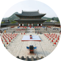
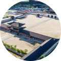
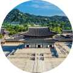
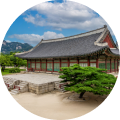

조선의 심장 - 경복궁
주요 전각을 따라 걷는 관람 여정
경복궁은 1395년 조선왕조의 첫 번째 법궁으로 건립된 대한민국을 대표하는 궁궐입니다.
추천코스 제공
주요 전각을 따라 걷는 관람 여정
경복궁은 1395년 조선왕조의 첫 번째 법궁으로 건립된 대한민국을 대표하는 궁궐입니다.
추천코스 제공
주요 전각을 따라 걷는 관람 여정

경복궁의 중심 공간으로 들어가는 주요 문으로, 궁궐 관람의 시작 지점입니다.

궁궐 안쪽으로 이어지는 돌다리로, 왕의 공간으로 들어가는 상징적인 길목입니다.

경복궁의 중심 전각으로, 국가 의식과 공식 행사가 열리던 공간입니다.
왕이 신하들과 국정을 논의하던 공간으로, 실제 업무가 이루어지던 전각입니다.

학문과 정책 논의가 이루어지던 공간으로, 궁궐의 행정 기능을 보여주는 전각입니다.
연못 위에 자리한 아름다운 누각, 경복궁의 풍경을 여유롭게 감상할 수 있는 공간입니다.
경복궁의 주요 관람 포인트를 둘러보는 산책 코스입니다.
궁궐의 중심 공간과 대표 전각을 빠르게 관람할 수 있습니다.
경복궁의 중심 공간으로 들어가는 주요 문으로, 궁궐 관람의 시작 지점입니다.
궁궐 안쪽으로 이어지는 돌다리로, 왕의 공간으로 들어가는 상징적인 길목입니다.
경복궁의 중심 전각으로, 국가 의식과 공식 행사가 열리던 공간입니다.
왕이 신하들과 국정을 논의하던 공간으로, 실제 업무가 이루어지던 전각입니다.
학문과 정책 논의가 이루어지던 공간으로, 궁궐의 행정 기능을 보여주는 전각입니다.
연못 위에 자리한 아름다운 누각, 경복궁의 풍경을 여유롭게 감상할 수 있는 공간입니다.
주요 시설 위치와 동선을 확인해 보세요.